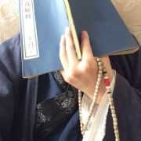

名字:
竟然
性别:男

介绍:研究龙血的十二种用途、合作研究魔法石
问题
答案
新建于:2015-11-09 11:20:02 AM，更新于2015-11-09 11:20:02 AM
正文: 我是个小道士...手上有一串桃核珠子，我姑姑亲手做的那种。
一次坐车，旁边一个三岁小孩，在他妈怀里，在我旁边坐着。
小孩一直在看我手上的珠子，我也挺喜欢这个小孩的，看着肉肉的，唇红齿白乖乖的。就把珠子卸下来给孩子玩去了。
几站之后我快到站了，小孩父母也意识到了，但是似乎没有想还我珠子的意思，于是我默默地和孩子父母说了
“我看这个孩子和我挺有缘的，不如度来和我修道吧！”
小孩父母惊恐的把珠子强下来还给我了......
我没把孩子当熊孩子啊...也没想整孩子啊，，你们这么惊恐为什么...